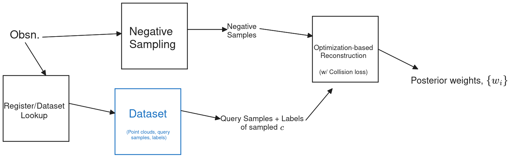
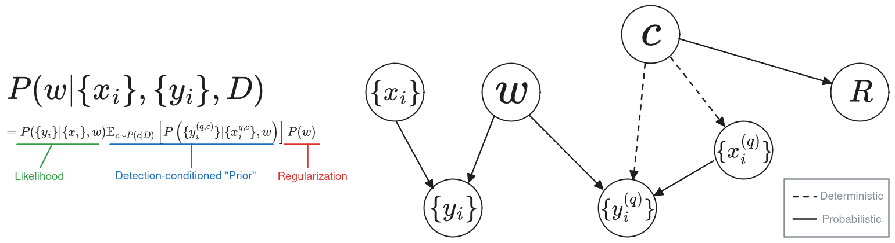
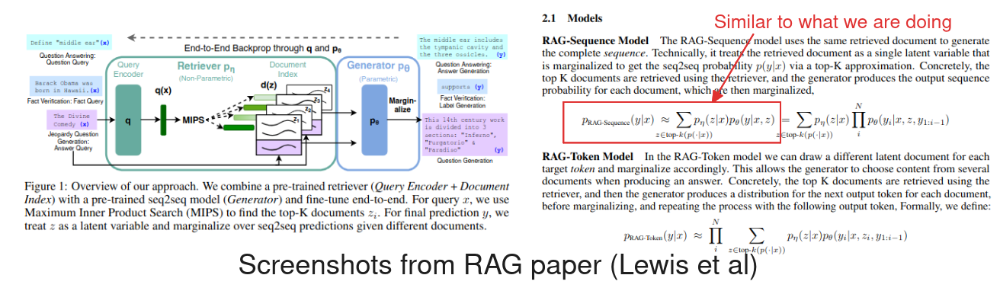
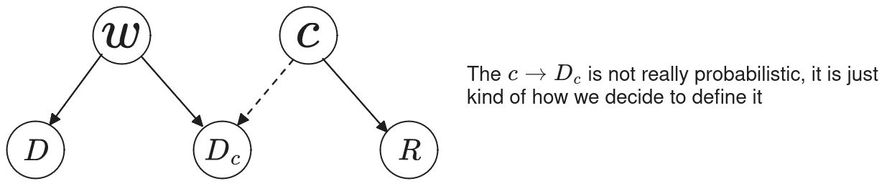
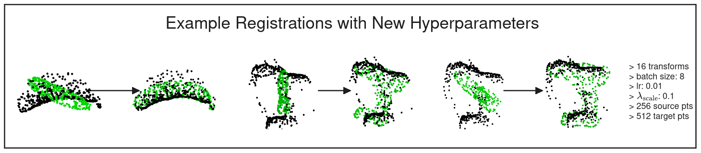
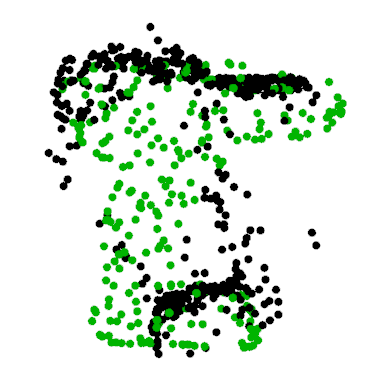
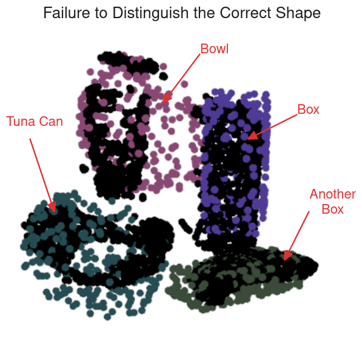
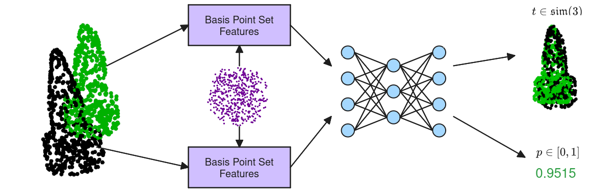
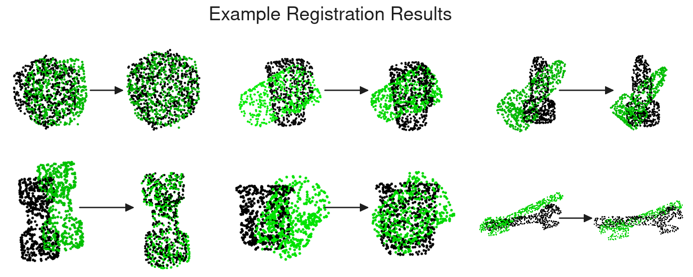
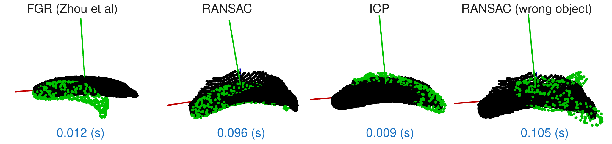

2024 Nov 08
Robustly building a continuous 3D representation of a multi-object scene is useful for many robotic manipulation tasks. In IROS 2024, we proposed V-PRISM [1] as a solution to this problem. One limitation of V-PRISM is that the scene is mapped and not reconstructed with use of an informative prior. In this future work, we are trying to construct a method for enforcing some sort of prior during reconstruction that provides more accurate reconstructions. Specifically, we want a method that (a) is more accurate with in-distribution objects; and (b) is robust to out-of-distribution objects.
The current method that we are working with shifts the problem from having an informative prior to having a “detection-conditioned” prior. In order to have a bit of Sim(3) resiliency, registration is performed as part of the process. The “prior” is then represented with a set of precomputed samples. Here is a figure overviewing the method:

The action items I wrote down from our last meeting were:
I touch on most of these in the write-up, and I try a couple new things out. I am starting to think that incorporating some sort of language or classifier might be the right way to go. Here are some things I want to talk about in this meeting:
A couple weeks ago I had a general argument for a “detection-conditioned” prior based on an argument in [2]. In the paper, they have a simple Bayes net that explains their probabilistic model. I figured it might be helpful conceptually to do the same. Here is a graph of the “Bayes net” that I have in my mind for our problem:

Perhaps this makes the derivation of the actual quantity we are after to a quantity that we can compute a little easier. Let S be a shorthand for the negatively sampled data (\{x_i\}, \{y_i\}) and R be the “detection result”. Here is an overview of the argument we currently have based on the Bayes net proposed: P(w | S, R) \propto P(S | w) P(w | R) = P(S | w) \mathbb E_{c \sim P(c | R)} \left[ P(w | c) \right] If we let Q_c be a shorthand for our query samples, \{x_i^{q, c}\}, \{y_i^{q, c}\}, we can write: P(w | S, R) \propto P(S | w) \mathbb E_{c \sim P(c | R), Q \sim P(Q | c)} \left[ P(w | Q) \right] However, we are saying that P(Q | c) is “deterministic” such that P(Q | c) = \delta(Q_c), meaning that we only evaluate it at the exact sampled Q_c. From there we have: P(w | S, R) \propto P(S | w) \mathbb E_{c \sim P(c | R)} \left[ P(w | Q_c) \right] \propto P(S | w) \mathbb E_{c \sim P(c | R)} \left[ P(Q_c | w) \right] P(w) The insight from a few weeks ago is that we can approximate the expectation over P(c | R) by sampling c_k \sim P(c | R) and only using a finite number of samples.
Note: In the above equations, when there are stuff like P(S | w) it really translates to P(\{y_i\} | \{x_i\}, w). The “x” terms always belong on the right hand side of the conditional probability.
Question: Does having a “detection result” even make sense? Should both the negative samples and classes be conditioned on the point cloud?
In practice, we use a NLL with a discount for the query samples: L(w) = BCE(w, \{x_i\}, \{y_i\}) + \frac{\lambda_\text{prior}}{2} \|w\|^2 + \frac{\lambda_\text{query}}{|C'|} \sum_{c \in C'} BCE(w, \{x_j^{(q, c)}\}, \{y_j^{(q, c)}\}) It would help strengthen the argument if we had some way to justify having such a discount factor. As we know, the BCE is really the negative log likelihood of the data. We can consider how adding a discount factor affects what the corresponding likelihood is. We know BCE is defined as: BCE(w, x_i, y_i) = - \ln \sigma(y_i w^\top x_i) Where \sigma = (1 + e^{-z})^{-1} is the sigmoid function. Let’s see what happens if we add in a multiplier: \lambda BCE(w, x_i, y_i) = - \lambda \ln \sigma(y_i w^\top x_i) = - \ln \left(\exp(\lambda)\sigma(y_i w^\top x_i)\right) = - \ln \left(\frac{\exp(\lambda)}{1 + \exp(-y_i w^\top x_i)}\right) = - \ln \left(\frac{1}{1/\exp(\lambda) + \exp(-y_i w^\top x_i - \lambda)}\right). As you can see this is kind of a messy term. If you squint, you can see that 0 < \lambda < 1 means it is less confident of a prediction. Perhaps I just needed to spend more time thinking about this, but I think there probably just isn’t a great probabilistic reason to have a multiplier besides saying there are less samples or something.
Question: Do you think this would ever be controversial with potential reviewers or can we just say we discount the query (prior) samples?
I know one thing mentioned last time was using partial values of y_i. While this may have the desired effect and be a little more justifiable, I feel that using a discount factor is overall much simpler and more desireable.
I added this section Friday afternoon right before the meeting.
I am/was concerned that the above was becoming a little too complex as far as the argument goes, so I am wondering if there is a much cleaner argument to make. I also was inspired by Retreival-Augmented Generation (RAG) [3]. It is a few years old, but got some hype from the NLP community. Here are some screenshots from the paper:

The motivation for RAG was to remove “hallucinations” by basically doing a neural network based dataset lookup (document query). I think our approach has some philosophical similarities to this work.
Let D be the negatively sampled data (previously referred to as S above), c denote class like above, w be Hilbert Map [4] weights. The argument goes as follows:
Part 1: Usually we have P(w | D) \propto P(D | w) P(w), but our P(w) has a lot of components, so we want to identify which component c it comes from. We use an identification result, R, like so (assuming independence): P(w | D, R) \propto P(D | w) P(w | R) = P(D | w) \cdot \mathbb E_{c \sim P(c | R)} \left[ P(w | c) \right], The term \mathbb E_{c \sim P(c | R)} \left[ P(w | c) \right] acts as a result-conditioned prior, replacing P(w).
Part 2: We use some predefined model to calculate P(c | R). We then approximate the expectation by drawing samples according to that distribution.
Part 3: We are basically going to handwave away our hard-to-justify decisions and say we define: P(w | c) \propto P(D_c | w) P(w), where D_c is our stored query samples for class c. Thus, we have P(w | D, R) \propto P(D | w) \cdot \mathbb E_{c \sim P(c | R)} \left[ P(D_c | w) \right] \cdot P(w). We optimize the negative log of this and add multipliers: -\lambda_1 \ln P(D | w) - \lambda_2 \ln \mathbb E_{c \sim P(c | R)} \left[ P(D_c | w) \right] - \lambda_3 \ln P(w)
Question: Would this argument be controversial? Is it convincing?
I guess we can think of the simplified bayes net for this argument. Maybe it looks something like this:

A couple weeks ago, I took an observation of a point cloud with the Kinect camera in the lab. I segmented the image and corresponding point cloud using Grounded SAM [5]. Here is a couple views of the segmented point cloud and image:
The plan for this week was to try the method out on this image. Due to how long/expensive registration for all the objects was in PyTorch, I had to downsample and use fewer points. In order to make sure that the new hyperparameters would still be able to register okay, I tried to register the banana and drill. Here are some examples:

Of course, sometimes registration failed:

Unfortunately, registration wasn’t quite able to distinguish the right objects on the Kinect scene. Here is an image to see what I am talking about:

Perhaps the solution here is a better “loss” function to evaluate the registration matches with. In fact, there has been some work on adjusting loss functions for registration to be more robust, specifically, [6] as well as [7] to an extent.
I had a bit of an out there idea. I wanted to maybe try learning the detection-conditioned prior. Martin mentioned something called basis point sets [8] that encode a point cloud. I decided to make a simple neural net that takes in two point clouds and tries to regress the pose change as well as predict the probability that the source and target point clouds match. Here is a image depicting how the network works (it is kind of a dumb network):

I tried to train for a while and used ground truth point clouds for both source and target. This approach didn’t work great. It seemed to only figure out how to center the object on the target point cloud. Here are some examples:

I’m sure if I really wanted to play with it I bet I could get something working, but I don’t think it would be worth the effort. For reference, there has been some work with deep learning for point cloud registration [9]–[12].
Idea: One thing we could do is simply train a classifier and use that as the P(c | R), which would tell us which the object is.
We might also consider brainstorming using a computer vision foundation model like DINO [13] or something similar.
Perhaps this is going after the wrong problem, but I wanted to see if
the method from [7] would solve the efficiency issues I
was having (even on the GPU it was taking ~1 minute to run the
registration). Fortunately, open3d contains an
implementation of the algorithm. Here is a speed comparison of
registration with the banana:

The registration was way faster than what I was getting using PyTorch. Even if this is just one object, a back of the envelope calculation suggests that if you do this for 4 objects \times 100 potential point clouds \times 0.1 second = 40 seconds, which is faster than what I was getting before. I still feel like this is kind of slow and unfortunately, RANSAC seems to be the only really successful registration algorithm.
I was able to change up RANSAC hyperparameters to half the running time of it and still get comparable results. While this is good, ~20 seconds still feels like a long time.
Idea: What if we only pick a subset of YCB [14] (or even ShapeNet [15]) objects to use as a prior (like only 20 or so)?
I have created an overleaf document, but I have not had too much time to write a bunch. Here is the link to view the doc (I can also send the link to edit as well):
I made a presentation and presented it in the lab meeting.
Looking towards the future, I want to: